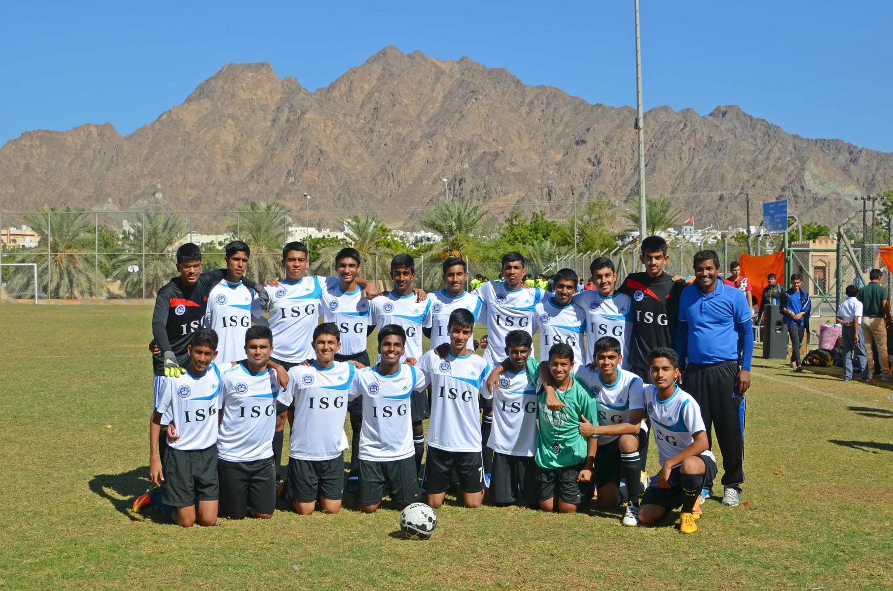

Hello, My name is Aditya

I am a Second year BSc (Hons) Economics and Management Student at King's College London
Look below to learn a bit more about
I'm Really passionate about a lot of things. Some of them are Photography, Football and Programming. Let me tell you more about these below
Photography

I am passionate about Photography. I have been clicking pictures for the past 8 years and also run a blog on instagram.
I use a Nikon D750 camera. My Favourite lens is the 50mm F/ 1.4. It is the perfect lens to use if you are into portrait photography.
Football
I have been playing football for over 10 years now. My favourite team is Manchest United and favourite player is Cristiano Ronaldo.
I've also represented my school at the CBSE Nationals tournament after winning the inter-school clusters tournament.
Coding

I am very passionate about coding. I've learnt to code in C++ for 2 years. In addition to that, i know Python, HTML, and CSS.
Fun fact: Even though i am studying Economics and Management, I almost ended up studying computer science and decided against it last minute.